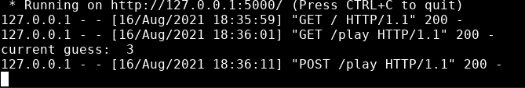
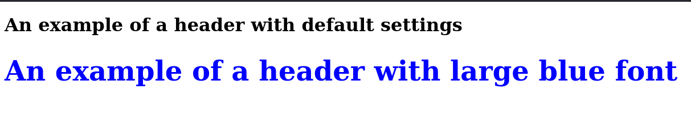
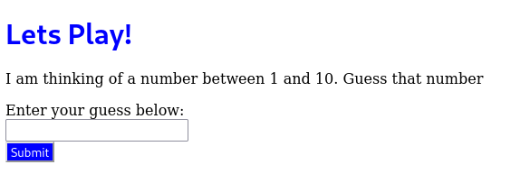
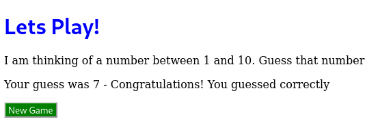
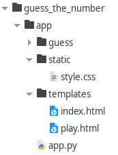

Your First Flask App - Part 2¶
This post is part 2 to building your first Flask app. (In case you missed it, part 1 is here). At the end of the previous post, we had a index.html page that had a hyperlink to play.html, a basic play page. In this post, we will enhance this further by adding:
a way for the user to input their guess
code that will check if the guess is correct
code that will provide feedback to the user on their guess
some simple CSS to adjust the look and feel of the web app.
Let’s guess¶
Lets first add a way for the user to input their guess. For this, we will use a HTML form . The first step will be to update play.html. Our form will have an input box where the user can enter their guess, and a button that will submit their guess for evaluation.
Update play.html with the following:
1 2 3 4 5 6 7 8 9 10 11 12 13 14 15 16 | <!DOCTYPE html>
<html>
<body>
<h1>Lets Play!</h1>
<p>I am thinking of a number between 1 and 10. Guess that number</p>
<p>
<form action="play" method="post">
<label for="guess">Enter your guess below:</label><br>
<input type="text" id="guess" name="guess"><br>
<input type="submit" value="Submit">
</form>
</body>
</html>
|
The code section
1 2 3 4 5 | <form action="play" method="post">
<label for="guess">Enter your guess below:</label><br>
<input type="text" id="guess" name="guess"><br>
<input type="submit" value="Submit">
</form>
|
creates a HTML form with a text box for you to enter your guess and a Submit button. When you click Submit, your guess is sent to Flask. The code action=”play” signifies that your guess is sent to the appropriate function associated with the “play” route in app.py. The method attribute of the form signifies how the information in the form is sent from the frontend to the backend. Here, the POST method is being used.
Note
Sending form data provides a good description of the GET and POST methods that are used to send form data.
Now that we have our form to receive input data from the user, lets make the necessary modificaitons to app.py to pick up and process the details from the form. app.py already contains a “play” route. Lets update:
1 2 3 4 5 6 | @app.route("/play", methods=["GET", "POST"])
def playtime():
guess = request.form.get('guess')
if guess:
print("current guess: ", guess)
return render_template("play.html")
|
Let unpick what is happening above. When the user presses Submit in the front-end, this triggers the request for the view of play.html. In the backend, this causes the activation of the playtime() function for the “play” route. The code request.form.get(‘guess’) looks for the key-value pair from the form that has the name ‘guess’. If present, it prints out the current guess in the terminal where you are running Flask, and renders the code in play.html. For example, in the terminal output below you can see that my guess was the number 3.
The above verifies that we are correctly capturing our guess from the HTML form. Next, we would like to modify play.html so that we can view our guess, when present, in the webpage itself. We will do this in two steps. First, we will modify play.html using Jinja, a web templating engine often used in Flask apps. Then, we will update app.py to process our guess from the form and send it back to play.html for display.
First modify play.html like so:
1 2 3 4 5 6 7 8 9 10 11 12 13 14 15 16 17 18 19 20 | <!DOCTYPE html>
<html>
<body>
<h1>Lets Play!</h1>
<p>I am thinking of a number between 1 and 10. Guess that number</p>
{% if guess %}
Your guess was {{guess}}
{% endif %}
<p>
<form action="play" method="post">
<label for="guess">Enter your guess below:</label><br>
<input type="text" id="guess" name="guess"><br>
<input type="submit" value="Submit">
</form>
</body>
</html>
|
The code section
1 2 3 | {% if guess %}
Your guess was {{guess}}
{% endif %}
|
is an example of Jinja. Here we are using it to create an if:else statement in our HTML file. If we receive a value for the variable guess, then play.html will print “Your guess was” followed by the value that you guessed.
Now we will modify the playtime() function in app.py. It currently captures our guess from play.html. We will then get it to send back our guess for output in play.html. Modify the playtime() function in app.py using following code below:
1 2 3 4 | @app.route("/play", methods=["GET", "POST"])
def playtime():
guess = request.form.get("guess")
return render_template("play.html", guess=guess)
|
The above code captures the value of guess, and sends it back. If no guess is made, as is the case when we load play.html for the first time, the guess variable has no value associated with it and it is therefore ignored by the Jinja code in play.html
Now that we have the basics in place, we now need to build the concept of a game and define its parameters.
Define the game parameters¶
A game starts when a ‘Let’s Play’ hyperlink in index.html or a ‘Restart Game’ button in play.html is pressed. This sends information to app.py to choose randomly the winning number. The user then takes turns to guess the winning number by entering their guess in play.html and hitting the Submit button. When they hit Submit, the guess is sent to app.py. app.py compares the guess to the winning number and sends feedback to play.html to let the user know how they done. If the guess is correct i.e. the guess = winning number, the user is notified and the game ends. Otherwise, the user is notified that their guess is either too high or too low in play.html, and the user can submit another guess.
Lets modify app.py to create a Game class that will help the app keep track of the current state of the game.
Add the following code to app.py:
1 2 3 4 5 6 7 8 9 10 11 12 13 14 15 16 17 18 19 20 21 22 23 24 25 26 27 28 29 30 31 32 | class Game:
"""
Create an instance of a game.
Game properties:
winning number
number of guesses
ability to check if an user's guess was correct
feedback for the user on their guess
"""
def __init__(self, bottom=1, top=10):
self.bottom = bottom
self.top = top
def new_game(self):
self.winning_number = random.sample(range(self.bottom, self.top + 1), 1)[0]
self.num_guesses = 0
def play(self, guess):
"""
Compare the user's guess to the winning number and provide
feedback to the user on their guess
"""
self.num_guesses += 1 # Update the number of turns counter
# Compare the user's guess to the winning number
if guess < self.winning_number:
return "Too low", -1
elif guess > self.winning_number:
return "Too high", -1
else:
return "Congratulations! You guessed correctly", 1
|
The above will allow us to create a Game object with a lower and upper range for the winning number. It’s new_game() method sets up a game with a winning number and counter for the number of guesses the user makes. It also has a method, play(), that compares the user’s guess to the winning number and provides feedback to the user on their guess.
Outside the Game class we then create a global instance of Game().
g = Game()
This allows the game instance to be accessed across all python functions within app.py .
Now lets add a new route, that when triggered, refreshes the global Game instance g, essentially creating a fresh game. In app.py add:
from flask import redirect
and then add:
1 2 3 4 | @app.route("/new_game", methods=["GET", "POST"])
def start_game():
g.new_game()
return redirect("play")
|
Next, modify playtime() as below:
1 2 3 4 5 6 7 8 9 10 | @app.route("/play", methods=["GET", "POST"])
def playtime():
guess = request.form.get('guess')
feedback = None # Default value
success = -1 # Default value
if guess:
# The guess arrives as a string via the form. Need to convert
# it to an integer
feedback , success = g.play(int(guess))
return render_template("play.html", guess=guess, feedback=feedback, success=success)
|
Finally, modify index.html so that it will route to “new_game” and trigger the start_game() function. Adjust the hyperlink as so:
<a href="new_game">Let's Play</a>
In the above code, when the Flask route “new_game” is triggered it triggers its associated function start_game(). This function re-freshes the current Game instance, effectively giving us a new game, and then finally re-directs us to the Flask route “play” via the code redirect(“play”). This triggers the playtime() function. If there is a guess received from play.html, we send it to the Game instance for feedback - feedback , success = g.play(int(guess)). Finally, we return whatever values we have to play.html for rendering in the front end: return render_template(“play.html”, guess=guess, feedback=feedback, success=success).
Note
The re-direct from the Flask routes “index” to “new_game” to “play” happens so quickly behind the scenes, that the user only perceives moving from index.html to play.html.
Our next step is to modify play.html to display the server feedback for our guess. If we have guessed correctly, the form to submit any further guesses will disappear.
1 2 3 4 5 6 7 8 9 10 11 12 13 14 15 16 17 18 19 20 21 22 23 24 25 26 | <!DOCTYPE html>
<html>
<body>
<h1>Lets Play!</h1>
<p>I am thinking of a number between 1 and 10. Guess that number</p>
{% if guess %}
Your guess was {{guess}}
{% endif %}
{% if feedback %}
- {{feedback}}
{% endif %}
{% if success == -1 %}
<p>
<form action="play" method="post">
<label for="guess">Enter your guess below:</label><br>
<input type="text" id="guess" name="guess"><br>
<input type="submit" value="Submit">
</form>
{% endif %}
</body>
</html>
|
Once again we are making use of Jinja. If we have a value for feedback, we print it out. If our guess was unsuccessful i.e. success = -1, then we display the form to submit another guess. Otherwise, we guessed correctly, removing the need to enter in any more guesses.
Next, lets create a ‘Restart Game’ button in play.html.
For play.html add the following within the body of the HTML:
1 2 3 4 5 6 | {% if success == 1 %}
<p>
<form action="new_game" method="post">
<input type="submit" value="New Game">
</form>
{% endif %}
|
The above code will display a “New Game” button if we have guessed correctly. When we click on this “New Game” button, the start_game() function is called in app.py . This re-creates a new game and re-directs the frontend back to play.html. Here as the game is new, we have no guess and no feedback and success = -1, hence, the user is prompted to enter a guess.
Run your Flask app and try playing a few games!
Formatting¶
Now that we have our first Flask app working, we can enhance the look and feel using CSS (Cascading Style Sheets). First we will cover using CSS in-line in a specific html document. After that we will cover the option of using an external CSS file that contains all the required CSS for your app in one place.
Basic structure of CSS¶
CSS is what is know as a style sheet language. It allows you a way to specify the look and feel of HTML through the use of “rulesets”. A ruleset consists of a selector (or the HTML tag of interest) and a series of declarations i.e. property : value combinations like “color: red;” or “font: 1.2em “Fira Sans”, sans-serif;”. For example,
1 2 3 4 | h1 {
color: blue;
font-size: xxx-large;
}
|
is a CSS ruleset with a number of declarations for the HTML h1 tag.
In the below picture, we can see the difference between the default settings for h1 headings and h1 headings set to blue and extra large font size.
Lets apply some CSS to our app.
In-line CSS¶
One way to apply CSS to HTML is to directly use it in-line within your HTML documents.
In play.html modify the h1 tag like so:
1 | <h1 style="font-family:system-ui; color: blue;">Lets Play!</h1>
|
Modify the input tag for the Submit button in the play form like so:
1 2 3 | <input style="color:white;background:blue;text-align:center;font-family:system-ui"
type="submit"
value="Submit">
|
And the input tag for the Submit button in the new_game form like so:
1 2 3 | <input style="color:white;background:green;text-align:center;font-family:system-ui"
type="submit"
value="New Game">
|
Now restart your Flask app and try it out! You should see something similar to below for the Submit button:
and something similar to below for the ‘New Game’ button:
Note
CSS reference is a good resource for exploring all the different CSS properties available and their otpions
Using in-line CSS is quick and convenient - looking at the HTML code you can see immediately what styling is applied to each HTML tag. However, as the number of HTML documents increases, it becomes tedious to add in-line CSS to all the relevant HTML tags, in particular, when you want to update all h1 tags to thave the same formating. In these cases, it makes more sense to use an external CSS file. Here all CSS rulesets for your project are in one location and are applied across all HTML documents in your project. You only have to define formatting for a particular HTML tag once and it is applied throughout, making updating the look and feel of your project much more easier.
External CSS¶
The current convention is to store your CSS stylesheets in a folder name “static”. Create a static folder for your CSS like below:
In this folder create a file style.css. Next we extract the inline CSS from play.html, add as required to style.css, and add the necessary hooks within play.html so that it can pull the required information from style.css.
In play.html, there are two buttons, both of type “submit” - the “Submit” button and the “New Game” button. Lets format each of these buttons differently so it is easier to visually distinguish between the two in the web app. To do this, we extract out the inline CSS and give each input tag an id. This id can be used as a reference across the web app.
Make the following changes to play.html. First:
1 | <input id="submit_guess" type="submit" value="Submit">
|
And then next:
This allows us to define the formating rules or declarations that will be applied relevant HTML tags throughout the webapp.
Next, we would like to extract the formating for the h1 header in play.html, and add it to style.css in such a way that it is applied to all h1 header tags across the app. In short, we want consistent formatting of headers across the app.
In play.html, we change the h1 tag back to:
1 | <h1>Lets Play!</h1>
|
In style.css, we add:
Now we have our CSS in place, the next step is to tell the HTML files where to find our CSS file. For each of our HTML files in our web app, play.html and index.html, add the following line to the <head> section:
1 2 3 | <head>
<link rel="stylesheet" href="{{ url_for('static', filename='style.css') }}">
</head>
|
and re-run your Flask app. Your app should look the same as it did with the ineternal CSS, but now all CSS instructions are located in the one place of your app, making any further updates or changes easier to apply.
If you explore various CSS resources further online, you will see that CSS is highly adaptability with many layers of options available for you to choose from. Sometimes, however, you may prefer to use pre-made CSS frameworks to save you time and give a more familiar look and feel to your web app to those already out there online. Some examples of popular CSS frameworks: * ‘<https://getbootstrap.com/> Bootstrap’_ * ‘<https://bulma.io/> Bulma’_ I’d recommend you try out a few.
Suggestions for further enhancements¶
Now that you have created your first Flask app, you have a good foundation upon which to build some more functionality. If you would like to play around and develop further, some possible things you could try out are: 1. Convert the “Let’s Play” hyperlink in index.html to a button and style 2. Display the current number of guesses on play.html to the user 3. Try a CSS framework to enhance the look and feel of the app
Enjoy!